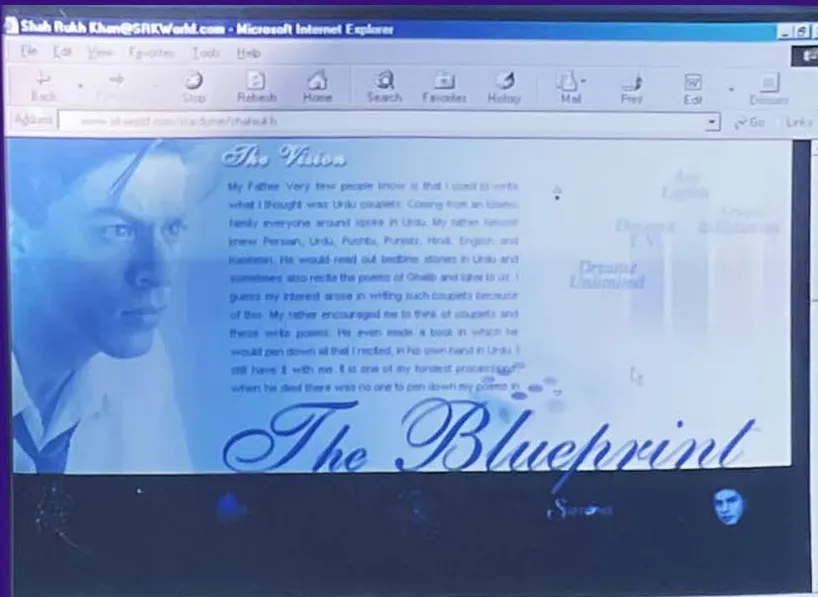
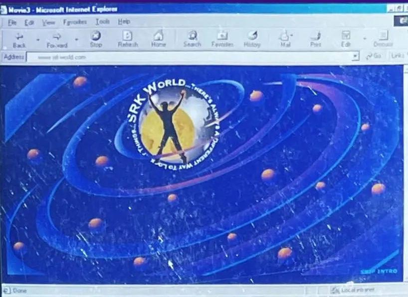

The book
The Blueprint

SRKWorld.com, 2000: "The Blueprint", the page where he mapped his own life. (Archive: the author's collection; designed by the author with Shah Rukh Khan)
In 2000 Shah Rukh Khan mapped his own life. On SRKWorld.com, the website he and the author built together, he divided himself into rooms: Diaper Days, From School To Cool, Campus Cackle, TV Cereal, The Wall, Going Digital, Opening Office, ArclightZ, Advantage, Tall Tales, Just Like That, Ram To Krishna and The Galleria. Eyewitness account; Archive: SRKWorld screen photographs, 2000
This book walks through that map. Its chapters carry the names he chose in 2000, in the order his life happened. Where the story runs past 2000, into years his website never saw, the new chapters take new names in the same voice: Mute Button, Encore, KING Size, Fan Mail and Log Out. Between the Parts sit the rooms that are not about a year but about a side of him: how he sells, what he says, how he balances home and work. Interpretation
It is also raw material. It gathers, checks and orders the public record of a life, so that when the man writes his own story, the facts are already in one place. Interpretation

SRKWorld.com, 2000: the home page, a galaxy of rooms. (Archive: the author's collection)